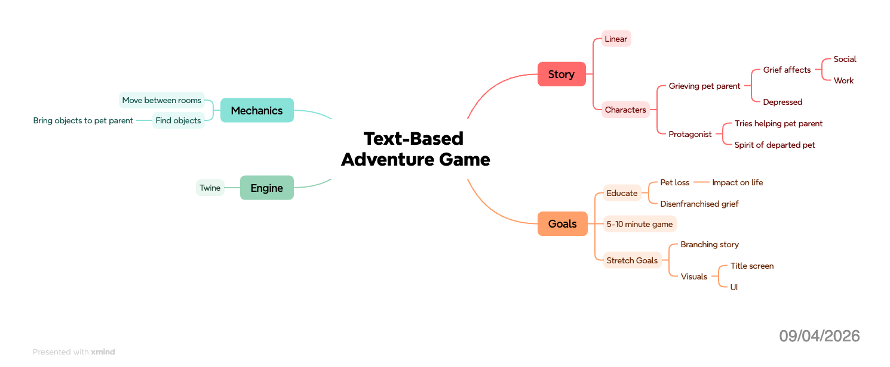

Week 1 Progress
9/3/2026
Journal Creation
I decided to go with GitHub Pages as my journaling platform. I did this because I want to store all my files in a GitHub repository. This will make it easy to work on my project from any of my machines.
I chose Hugo as my backend. It supports markdown format which I am familiar with and can use already built themes. I chose rewired as my theme. I liked it because it looked like a command line interface which reminds me of text based games.
I was looking into software that would add the ability to annotate posts to my journal. I was tinkering with the idea of putting my documents on my GitHub Pages site. But this didn’t work. I’m guessing this is because I’m using a static site generator. I wish I had figured that out earlier instead of wasting time on it.
Goals for Tomorrow
- Create mind map
- Experiment with Twine
9/4/2026
Mind Map
I created my mind map. I found a program called Xmind that has already built templates for mind maps. It definitely looks better than anything I could manage in FigJam. My mind map ended up being a retelling of my presentation that I gave in class. But I figure this is fine because I already had a lot of details worked out at that point. I may update it in the future.

Experimenting with Twine
I also worked with Twine today. I set up a simple story to test with. I’ve decided to go with the default story format called Harlowe. It has plenty of documentation and its manual is organized and thorough. I’m having lots of fun with it. I worked about an hour with it so far and I didn’t want to stop. I chose to so I could start creating this journal entry.
Terminology I Learned
- Story
- The project itself
- Passages
- These are equivalent to a page in a choose your own adventure book
- Links
- Point to other passages
- Macros
- Coding commands such as “set” and “if”
Coding I Worked On
- Navigation between passages
- Setting Variables
- Using
if/elsestatements
Coding Example
{
(if: (history:)'s last is "Start") [
(set: $my_var to "testing")
]
(else:) [
Variable isn't correct
]
}
{
(if: $my_var is "testing") [
Variable is correct
[[Secret Page]]
]
}
This code does the following:
- Checks to see if the last passage you were in was called “Start”
- If it is, it sets a variable called
my_varto “testing” - If it’s not, it prints out “Variable isn’t correct”
- If it is, it sets a variable called
- Checks to see if the variable
my_varis “testing”- If it is, print “Variable is correct” and show a link to another passage
- Nothing happens if the variable does not equal “testing”
Goals for Tomorrow
- Experiment more with Twine
- Test hosting ideas (web server, download link, etc)
9/5/2026
Studying Harlowe Documentation
Today I looked through the Harlowe documentation trying to learn new terms and ways to code. The concepts are similar to regular coding but the syntax is very different. It makes it more compelling that way since I have to really pay attention and focus on my coding. I have hit a point of frustration where the documentation’s code samples assume you know other commands/markup and doesn’t explain what they are or link you to the part of documentation that explains them.
Terminology I Learned
- Prose
- Written text that is visible to the player
- Hook
- Text made special by attaching macros and styling
- Changers
- Modifiers to hooks, styling, and commands
- Lambdas
- User created functions that add precision to macros
- Enchantments
- Applies a changer or lambda to occurrences of a hook or string in the passage it’s included in
Goals for Tomorrow
- Test hosting ideas (pushed from today)
- Start project planning document
9/6/2026
Testing Hosting Ideas
I wasted about two hours on this. Twine stories are saved as raw HTML files. I kept trying to embed it in a post on my GitHub Pages site.
Steps I Went Through on GitHub Pages/Hugo
- Uploaded my story’s HTML file to my Hugo folder on GitHub
- Used a
divtag to embed the file into an iframe - Added permission to render HTML files in Hugo
- This enabled the iframe but the frame had a “Page Not Found” error
- Tried moving the HTML file to different directories so Hugo could find it
- This eventually worked but the embedded frame wouldn’t show the entire page
- Tried putting the raw HTML directly into the post
- Hugo reported a security/allowed content error
- Added permission to allow using raw HTML in Hugo
- This didn’t render well
Pivoting
Eventually I decided I didn’t want to spend more time on trying to get this to work. I pivoted to posting an external link to the file instead.
I started with Google Drive but the link just pulled up the raw code. The user would have to then download it and open it locally.
Next I tried Dropbox. This actually worked. When the user clicks the link it opens a Dropbox page that renders the actual game.
Project Planning Document
I started my project planning document. I’m putting it on my GitHub pages site so I can easily link to it. I’m using markdown to make the weekly schedule as a table. I have hit a road block however, weeks 10 - 15 have some ambiguous instructions for what is due on those weeks.
Goals for Tomorrow
- Email my professor to ask about ambiguous entries in the class schedule
- Work on the project planning document as much as I can until I can resolve the roadblock.
9/7/2026
Project Planning Document
I sent my professor an email this morning asking to clarify some of the schedule. Meanwhile, I filled out the sections for resources and people needed.
Goals for Tomorrow
- Wait for clarification email
- Finish the planning document as best as I can
9/8/2026
Project Planning Document
I’ve gone ahead and filled in the rest of the project planning document as best I could to make sure it will be complete for tomorrow’s class. I’ll keep an eye on my email and update if necessary.